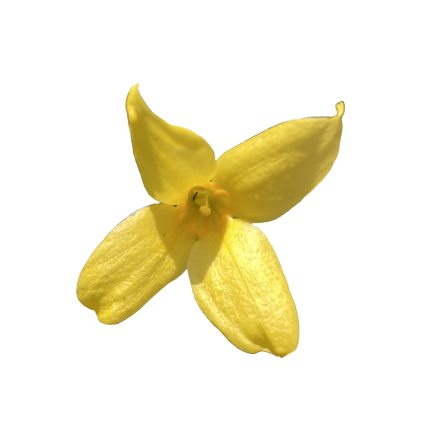

specializing in landscape and portrait photography.
fuka
kamata
photographer ————
Based in Hyogo Prefecture. Started working as a photographer in 2017. Served as a family photo shoot, advertising shoot, and photography class instructor.
Flowers swaying in the wind, sunlight filtering through the trees, and casual everyday scenes I value capturing moving moments in photos.

